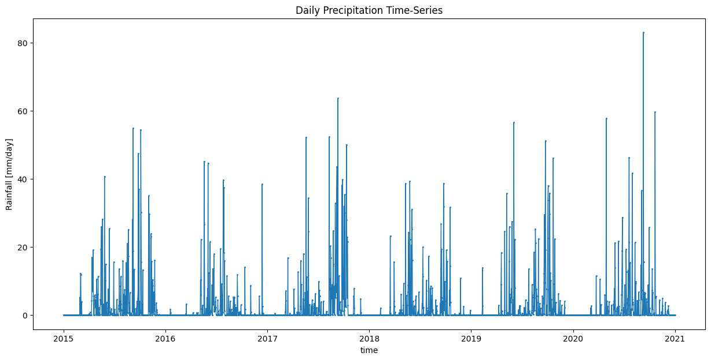
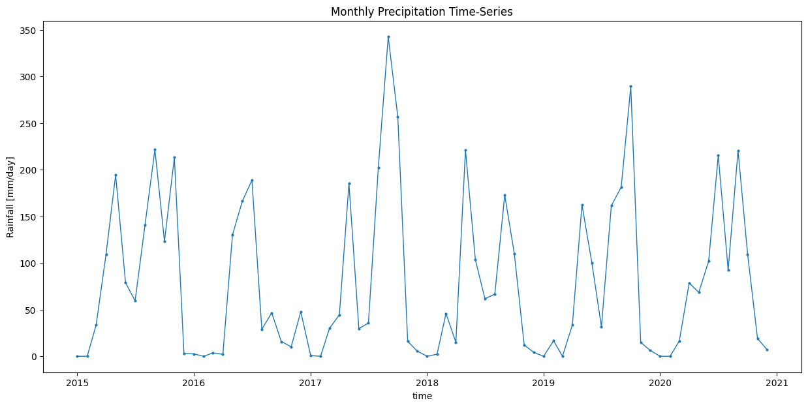

Aggregating Precipitation Time Series#
Introduction#
XArray that can perform time-series aggregation with a simple and concise syntax using the resample() method. We can easily change the frequency of the original time-series using the desired aggregation method. This tutorial shows how to take a daily precipitation time-series and aggregate it to a monthly total precipitation time-series.
Overview of the Task#
We will download the gridded precipitation data from Indian Meterological department (IMD) using imdlib, aggregate the daily time-series to monthly total rainfall and download the resulting rasters as GeoTIFF files.
Input Data:
Gridded daily precipitation binary data from IMD.
Output:
Monthly precipitation rasters as GeoTIFF files.
Data and Software Credit:
Pai D.S., Latha Sridhar, Rajeevan M., Sreejith O.P., Satbhai N.S. and Mukhopadhyay B., 2014: Development of a new high spatial resolution (0.25° X 0.25°)Long period (1901-2010) daily gridded rainfall data set over India and its comparison with existing data sets over the region; MAUSAM, 65, 1(January 2014), pp1-18.
Nandi, S., Patel, P., and Swain, S. (2024). IMDLIB: An open-source library for retrieval, processing and spatiotemporal exploratory assessments of gridded meteorological observation datasets over India. Environmental Modelling and Software, 71 (105869), https://doi.org/10.1016/j.envsoft.2023.105869
Running the Notebook:
The preferred way to run this notebook is on Google Colab.

Setup and Data Download#
The following blocks of code will install the required packages and download the datasets to your Colab environment.
%%capture
if 'google.colab' in str(get_ipython()):
!pip install rioxarray imdlib
import os
import imdlib as imd
import rioxarray as xr
from matplotlib import pyplot as plt
import pandas as pd
data_folder = 'data'
output_folder = 'output'
if not os.path.exists(data_folder):
os.mkdir(data_folder)
if not os.path.exists(output_folder):
os.mkdir(output_folder)
Download gridded binary datasets using imdlib.
start_year = 2015
end_year = 2020
variable = 'rain' # other options are ('tmin'/ 'tmax')
data = imd.get_data(
variable,
start_year,
end_year,
fn_format='yearwise',
file_dir=data_folder
)
Downloading: rain for year 2015
Downloading: rain for year 2016
Downloading: rain for year 2017
Downloading: rain for year 2018
Downloading: rain for year 2019
Downloading: rain for year 2020
Download Successful !!!
Data Pre-Processing#
First we read the data and create a XArray Dataset. The NoData values are stored as -999 so we set those to NaN.
data = imd.open_data(
variable,
start_year,
end_year,
'yearwise',
data_folder)
ds = data.get_xarray()
ds = ds.where(ds['rain'] != -999.)
ds
<xarray.Dataset> Size: 305MB
Dimensions: (time: 2192, lat: 129, lon: 135)
Coordinates:
* lat (lat) float64 1kB 6.5 6.75 7.0 7.25 7.5 ... 37.75 38.0 38.25 38.5
* lon (lon) float64 1kB 66.5 66.75 67.0 67.25 ... 99.25 99.5 99.75 100.0
* time (time) datetime64[ns] 18kB 2015-01-01 2015-01-02 ... 2020-12-31
Data variables:
rain (time, lat, lon) float64 305MB nan nan nan nan ... nan nan nan nan
Attributes:
Conventions: CF-1.7
title: IMD gridded data
source: https://imdpune.gov.in/
history: 2025-04-08 18:33:42.491078 Python
references:
comment:
crs: epsg:4326Aggregating Data#
The input data containsdaily precipitation values. We want to aggregate these to monthly totals. XArray allows specifying the target frequency using a concise frequncy string from Pandas. The string 1MS creates a time-series grouping from Month Start as 1 month intervals. We use sum() after resampling to calculate the monthly totals.
The result is a XArray Dataset with 12 time-steps for each year.
ds_monthly = ds.resample(time='1MS').sum()
Plotting the time-series#
Select the rain variable.
da_original = ds['rain']
da_monthly = ds_monthly['rain']
We can extract the time-series at a specific X,Y coordinate. As our coordinates may not exactly match the DataArray coords, we use the interp() method to get the nearest value.
coordinate = (13.16, 77.35) # Lat/Lon
original_time_series = da_original \
.interp(lat=coordinate[0], lon=coordinate[1], method='nearest')
aggregated_time_series = da_monthly \
.interp(lat=coordinate[0], lon=coordinate[1], method='nearest')
fig, ax = plt.subplots(1, 1)
fig.set_size_inches(15, 7)
original_time_series.plot.line(
ax=ax, x='time', marker='o', markersize=1,
linestyle='-', linewidth=1,)
ax.set_title('Daily Precipitation Time-Series')
plt.show()

Let’s plot the aggregated time-series chart.
fig, ax = plt.subplots(1, 1)
fig.set_size_inches(15, 7)
aggregated_time_series.plot.line(
ax=ax, x='time', marker='o',
linestyle='-', linewidth=1, markersize=2)
ax.set_title('Monthly Precipitation Time-Series')
plt.show()

Export Monthly Images as GeoTIFFs#
We can iterate through each time step and export the monthly rasters as GeoTIFF files.
for time in da_monthly.time.values:
image = da_monthly.sel(time=time)
# transform the image to suit rioxarray format
image = image \
.rio.write_crs('EPSG:4326') \
.rio.set_spatial_dims('lon', 'lat')
date = pd.to_datetime(time).strftime('%Y-%m')
output_file = f'image_{date}.tif'
output_path = os.path.join(output_folder, output_file)
image.rio.to_raster(output_path, driver='COG')
print('Wrote file:', output_path)
If you want to give feedback or share your experience with this tutorial, please comment below. (requires GitHub account)